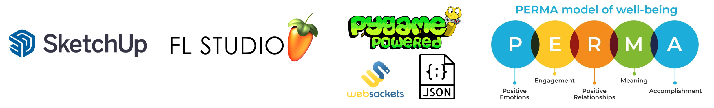
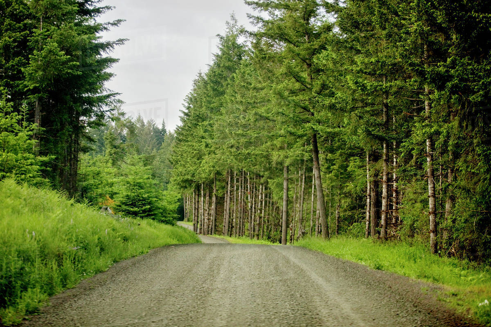
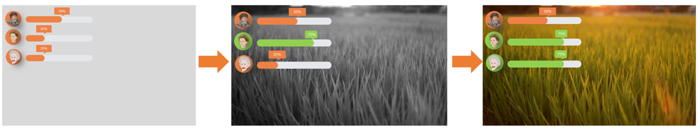

Stress relief has been a popular concern for decades. Nature-based therapy has been validated to significantly reduce pressure. However, the opportunities of being exposed to the real natural environment are limited under COVID-19 conditions. A virtual natural environment generated by VR headsets and CAVE projection provides a promising way to substitute for real natural scenes while having the potential to incorporate some novel features such as biofeedback. Here we plan to design systematic meditation training where users play mindful games in the virtual natural environment with physiology measurement. The content of meditation is designed according to PERMA theory in positive psychology and the biofeedback system can monitor the user's mental state in real-time. When the user reaches a state of concentration and calmness, their meditation experiences change in the form of the alteration of visual and auditory stimuli, in which way the user gains awareness of their own thoughts and emotions and is guided to adjust his/her psychological state for effective stress reduction.
1. Created a detailed business plan for the target audience by combining virtual reality, biofeedback, positive psychology, and nature-based therapy for stress relief based on comprehensive market research (see Design Background)
2. Used Sketchup Software to design 3D models for the interior natural space with CAVE projection (see Space Design Demo)
3. Implemented simple neurofeedback: Used FL Studio to separate MIDI files into different tracks and wrote python codes based on pygame, websocket, and json packages to control the volume of music pieces in real-time using EEG signals
4. Incorporated PERMA theory from positive psychology into nature-based therapy to write scripts and made meditation videos using artificial intelligence emotional speech synthesis tools for positive group psychotherapy (see Individual Neurofeedback Content Design Demo)
1. marketing
2. Sketchup, FL Studio, Python programming (pygame, websocket, json)
3. brain-computer-interface, positive psychology


Guided meditation script
想象你在一个静谧的清晨 (Imagine yourself on a quiet morning)
行走在一条通往森林的小路上 (Walking on a path that leads to the forest)
空气中浸润着凉爽平和的味道 (The air was cool and peaceful)
Neurofeedback ideas
A character is walking in the grass, surrounded by trees on both sides and grass at the foot.
The walking speed is controlled by the "attention" signal.
When the "attention" becomes high, the walking speed will be faster.
The number of grass on the ground is controlled by a signal called "relaxation".
The higher the "relaxation", the more grass trees and the faster the growth.
Guided meditation script
青翠欲滴的树叶在风中热情地摇曳着 (The green leaves sway enthusiastically in the wind)
庆祝着黎明的诞生(Celebrating the birth of the dawn)
也迎接你珍贵的来访 (And welcome your precious visit)
Neurofeedback ideas
A character is observing a tree.
The higher the "attention", the quicker the tree grows, the higher the "relaxation", the faster the leaves sway.
Guided meditation script
澄澈的雨水是天空送给大地的礼物 (Clear rain is a gift from the sky to the earth)
它滋润花朵，把娇嫩的花瓣晕染成治愈的色泽 (It moistens the flowers, turning the delicate petals into a healing hue)
它抚摸土壤，让柔软的泥土孕育出淡淡的芳香(It caresses the soil, giving the soft soil a subtle fragrance)
Neurofeedback ideas
A character is observing a tree.
The higher the "attention", the quicker the tree grows, the higher the "relaxation", the faster the leaves sway.

• Users sit quietly on the sensor-embedded cushion and practice mindfulness according to the meditation instructions and music.
• This meditation training is a full blend of positive psychology and nature imagery therapy, guided by words and music delivered to all users through sound.
• The smart cushion monitors each user's heart rate variability(HRV) in real time.
• Multiple users can collectively control what all users see through heart rate variability: the higher the relaxation (more people reach their individual relaxation degree baseline), the better the view of natural scenes (e.g., clouds moving, trees swaying, flowers blooming, streams flowing, snowflakes flying, birds singing, waterfalls cascading).
• Each meditation lasts 3-5 minutes. When the total heart rate variability of all users reaches a certain threshold, the next meditation theme can be unlocked. As the topic becomes more difficult, the content will become richer and more exciting.
Neurofeedback ideas
A character is observing a tree.
The higher the "attention", the quicker the tree grows, the higher the "relaxation", the faster the leaves sway.